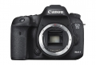

器材库 > APS及其以下画幅可换镜头数码相机 > EOS 7D Mark II

规格总览
产品类型
APS画幅可换镜头数码相机
发布日期
2014-09-15
厂家推荐价格
11,000.00 （人民币）
影像规格
影像传感器
CMOS
影像传感器尺寸
22.4×15毫米
有效像素
约2020万像素万
影像处理器
双DIGIC 6
低通滤镜
有
最大解像度
约2000万像素（5472 × 3648）
静态图像尺寸
最高5472 × 3648
静态图像格式
JPEG, RAW, RAW+JPEG
画幅比
3:2
短片尺寸
1920×1080（60p）
短片格式
MOV, MP4
防抖系统
镜头防抖
镜头和对焦
镜头卡口
Canon EF
兼容镜头
EF/EF-S
对焦系统类型
TTL辅助影像重合，相位检测
对焦点
65点（最多65个十字型对焦点）中央双十字-3EV
AF辅助灯
有
手动对焦
支持
曝光控制
测光系统
约15万像素RGB+红外测光感应器
测光模式
中央重点测光, 多分区评价测光, 点测光, 局部测光
测光范围
EV 0～20（23℃、ISO 100）EV
快门类型
电子控制焦平面快门
快门速度
1/8000s到30s；B门
闪光同步速度
1/250s秒
曝光补偿
±5EV以1/3EV级调整
ISO感光度
100, 51200
连拍
最高10fps（可设置为约1-9张/秒）JPEG最大格式连拍数量130张
闪光灯
内置闪光灯
弹出式
闪光模式
E-TTL II
取景器/显示屏
取景器
固定式棱镜取景器
取景范围
100%
取景放大倍率
1.0x倍
景深预视
有
LCD类型
彩色TFT LCD
LCD尺寸
3.0英寸
LCD像素
104万
视野率
100%
Live View
有
文件输入/输出
内置存储容量
Dual Pixel CMOS AF（全像素双核CMOS AF）/反差检测方式（面部+追踪、自由移动多点、自由移动1点）
存储卡
CF, SD/SDHC
数据接口
USB3.0
视频/音频接口
AV 输出, MIC 输入, C型HDMI接口
电源
电池
电池LP-E6N/LP-E6
续航能力
使用取景器拍摄：23℃时约670张、0℃时约640张
机身规格
材质
全金属
颜色
黑色
尺寸
约148.6 × 112.4 × 78.2mm
重量
约820（仅机身）g
其它
配件端口
遥控线, 热靴, 外接附件接口, 耳机, 脚架螺丝孔, 麦克风输入端子
光美2015-02-15 22:474.5 分
操作性 5.00功能性 5.00美观性 4.50趣味性 4.50耐用性 5.00性价比 4.00解像力 4.00色彩还原 4.00
muduo2015-02-15 10:594.69 分
操作性 5.00功能性 5.00美观性 4.50趣味性 4.50耐用性 5.00性价比 4.50解像力 4.50色彩还原 4.50
langziyan2014-11-25 00:004 分
操作性 3.50功能性 4.50美观性 5.00趣味性 5.00耐用性 4.00性价比 2.50解像力 3.50色彩还原 4.00
yoyosum2014-10-23 15:084.88 分
操作性 5.00功能性 5.00美观性 5.00趣味性 5.00耐用性 5.00性价比 5.00解像力 4.50色彩还原 4.50
wingszero2014-09-22 04:464.63 分
操作性 5.00功能性 5.00美观性 4.50趣味性 5.00耐用性 5.00性价比 4.00解像力 4.00色彩还原 4.50
产品图 / 样片
评测 / 相关文章
- 详细内容 （存档）
- 全方位的进化 佳能EOS 7D Mark II测评 （存档）
- ［试用］佳能7D Mark II追拍东非大草原野生动物 （存档）
- ［资讯］解剖到底：Canon 7D II两代对比拆解 （存档）
- ［试用］游洱海看鱼鹰 大理古城寻挚爱 （存档）
- ［试用］来云南，用7D2拍文艺小片 （存档）
- ［试用］纯净之旅 佳能7D2实拍云南美景 （存档）
- ［试用］7D2实拍：香格里拉 纯净天堂 （存档）
- ［资讯］佳能EOS 7D Mark II官方样片欣赏 （存档）
- ［资讯］佳能发布APS-C画幅旗舰EOS 7D Mark II （存档）